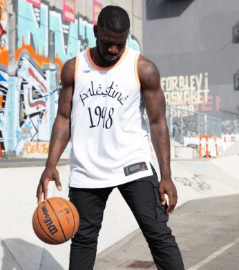

Ali Hammad
Rating: 4/5
This basketball jersey is great! Comfortable and fits well.
This special-edition basketball jersey celebrates Palestinian heritage with a modern athletic cut and soft cotton blend. It is designed for both performance and casual wear, with reinforced seams and moisture-friendly fabric. The 1948-inspired visual details make it a distinctive collectible for customers who value culture, quality, and storytelling.

Price: $34.99 USD
| Attribute | Value |
|---|---|
| Team | Palestinian National Team |
| Edition | 1948 Special Edition |
| Size | Medium |
| Material | 45% Cotton |
| Color | Black |
| Origin | Made in Palestine |
Overall Rating: 3.6 out of 5 stars
Rating: 4/5
This basketball jersey is great! Comfortable and fits well.
Rating: 3/5
Good quality, but the color faded after the first wash. Still happy with the purchase.
Rating: 4/5
Excellent quality but the size is bigger than expected. Would buy again.